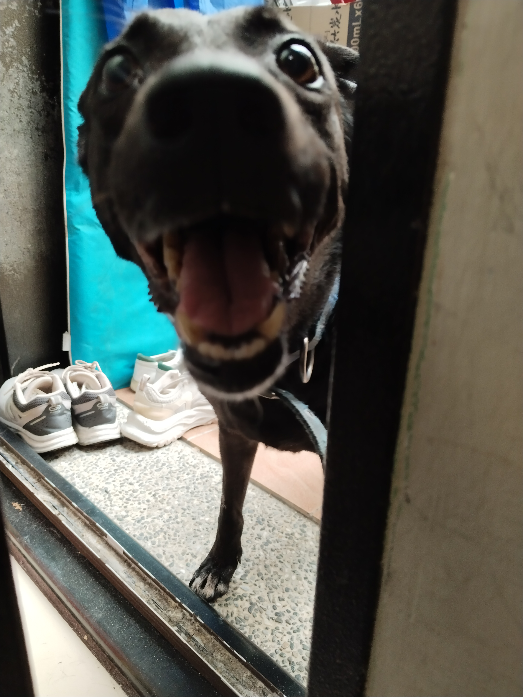
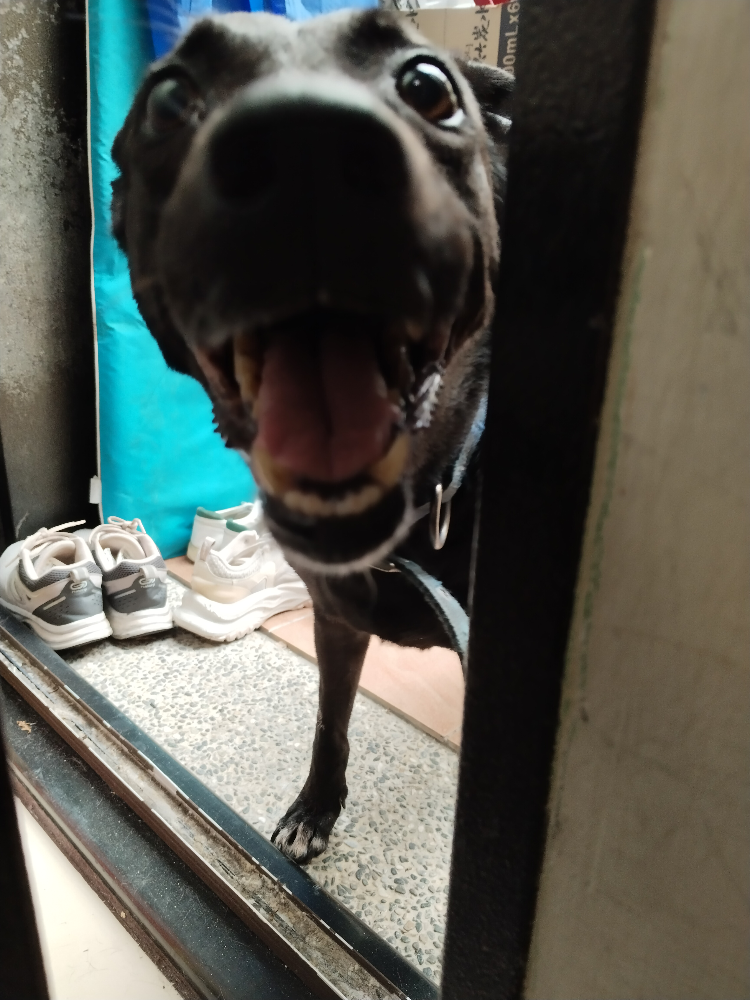
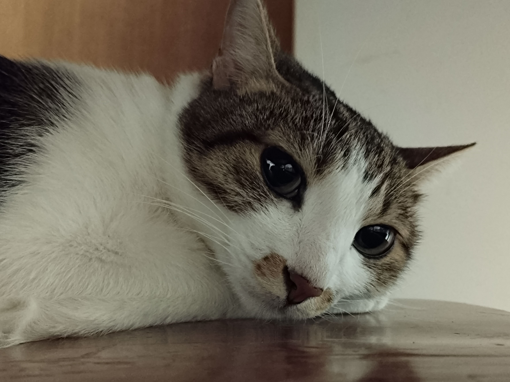
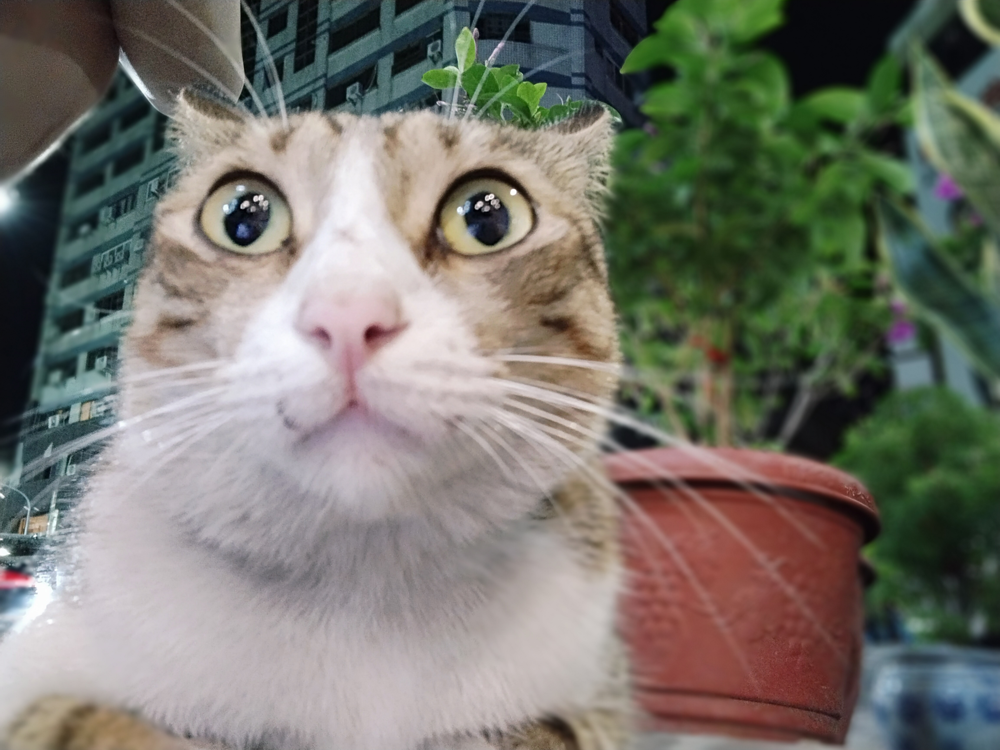
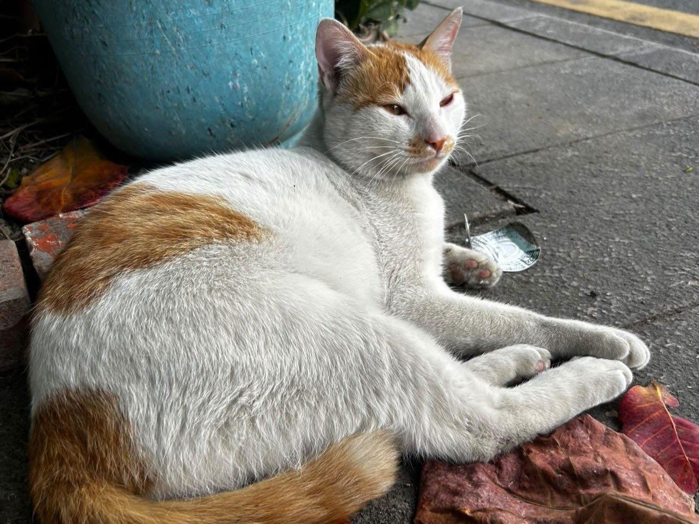
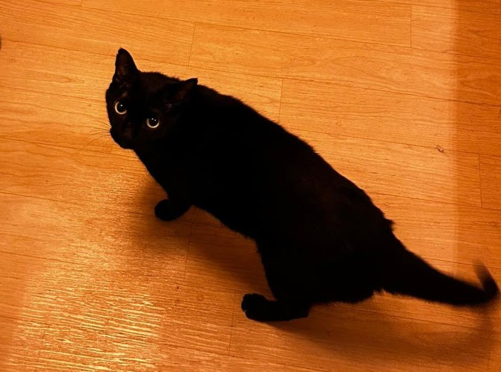

「人類最忠誠的夥伴」
狗飼料，肉乾，狗罐頭等
每天都需要帶狗狗出門消磨精力
伙食的花費、每年的疫苗、健康檢查、室內的活動空間要足夠
會關心主人，給於主人溫暖，信任主人
 

IG：fatfatgod
「心靈上的陪伴」
貓飼料、罐頭，肉泥等
需要的陪伴時間相對較少，需要足夠時間玩耍、需較花心思關心，不像狗狗會有明顯情緒
貓砂需要天天清理，口腔牙齒容易發炎要刷牙，容易腎臟病，需特別注意喝水狀況，因為舔毛會有吐毛球的問題，要會分辨嘔吐物狀況
會關心主人，給於主人溫暖，信任主人
IG：shubingcat
「學人、愛說話」
堅果、蔬菜、水果
花時間繫鳥鏈帶出去飛
建議飼養籠大小之長、寬、高，為鳥類翅膀張開長度兩倍以上的長度，籠子過小會造成鳥類緊迫或運動受限
環境過度聲光干擾、溫差過大、噪音、新籠友加入、突然的食物更換等等都可能引起鳥的緊迫
「小小圓圓軟綿綿」
麥片、葵瓜子、種子(過油的堅果不能給太多)
無須陪伴，屬於夜行性動物、常在晚上跑滾輪吵主人
需要準備充足木屑讓倉鼠可以鑽，籠子要多個間格，要有個空間放鼠沙讓倉鼠自己洗澡
喜歡磨牙，怕驚嚇，他們會把食物藏在只有他們知道的角落，一般壽命只有1～3年